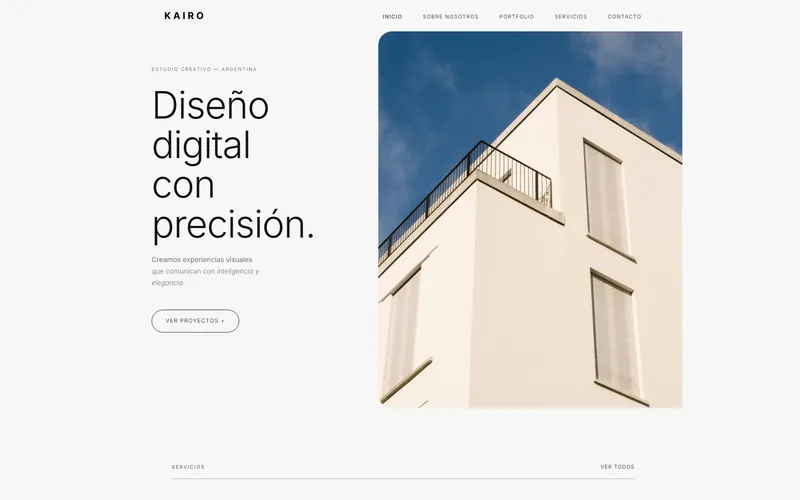
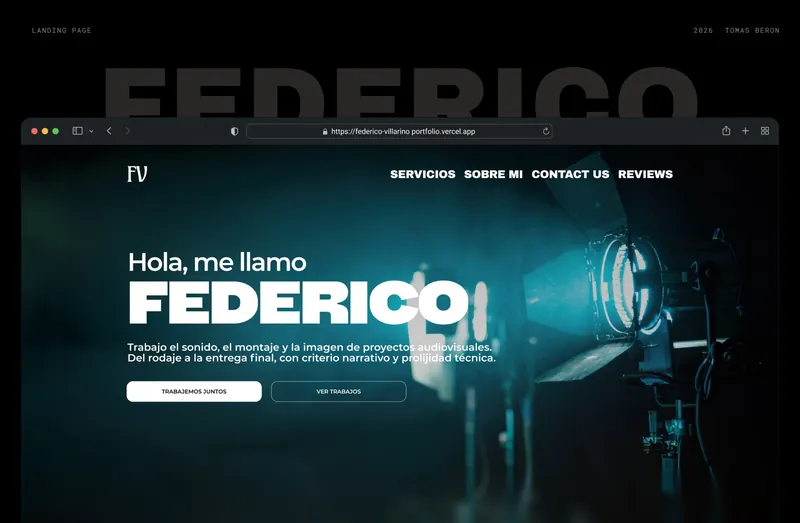
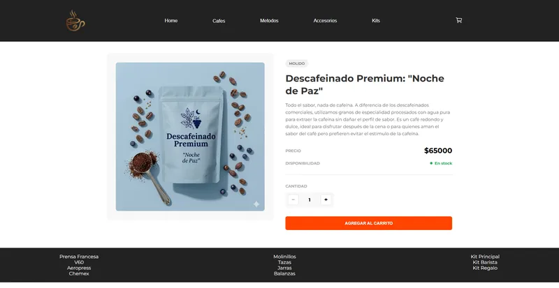
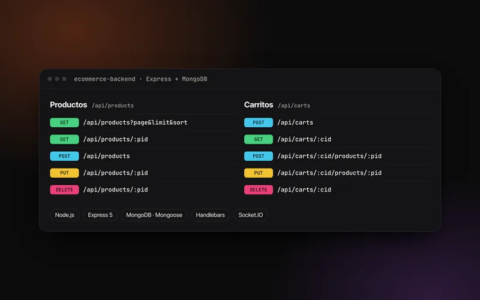
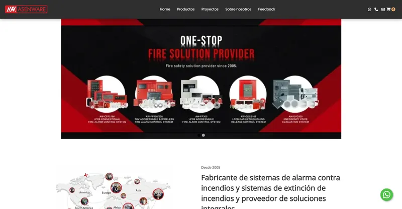
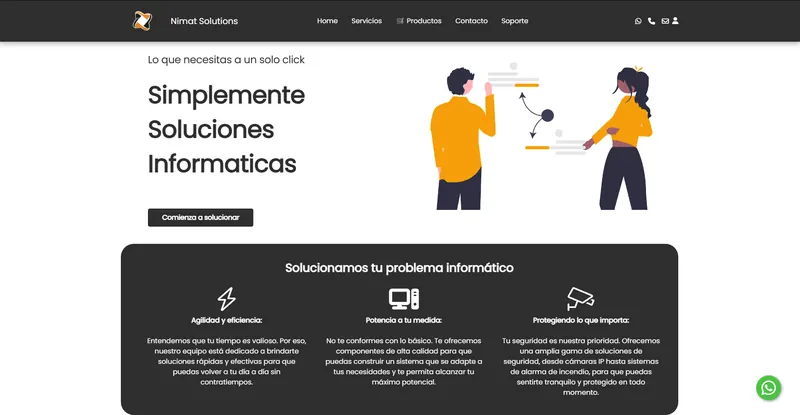
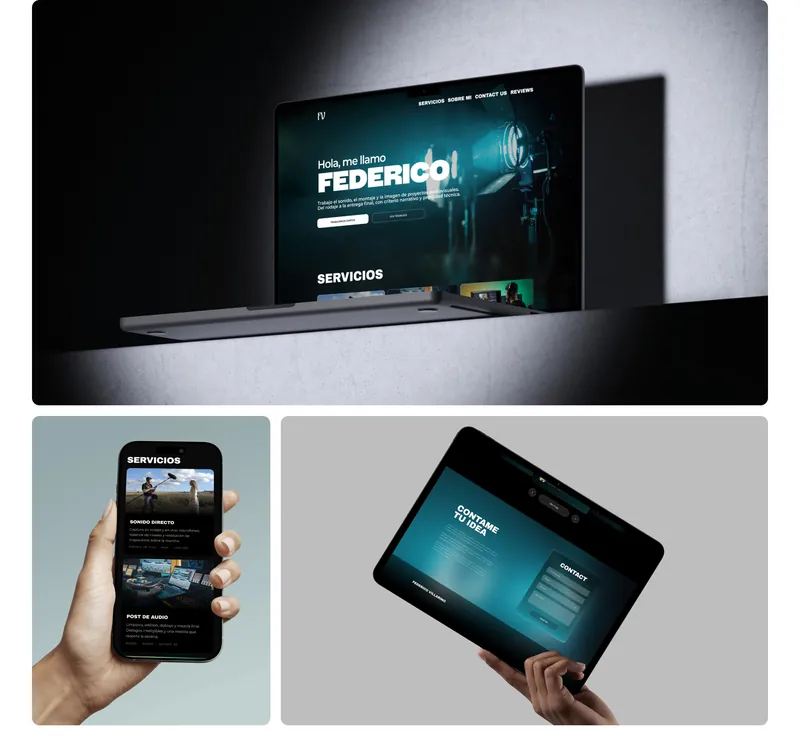
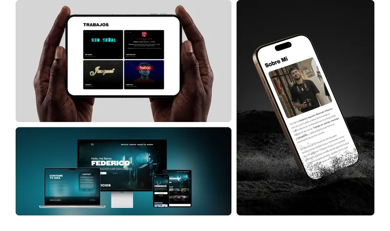
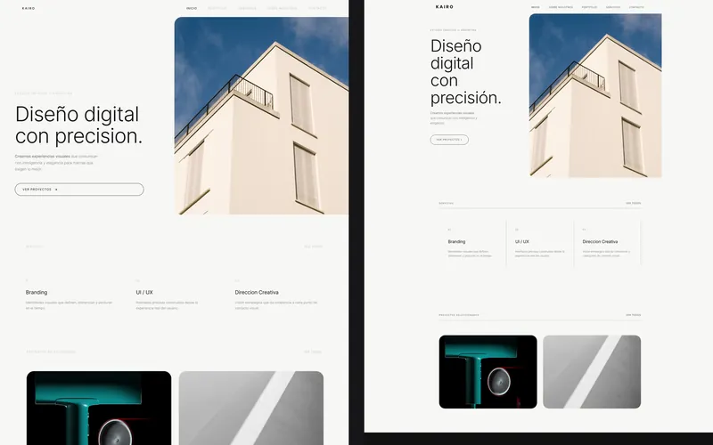
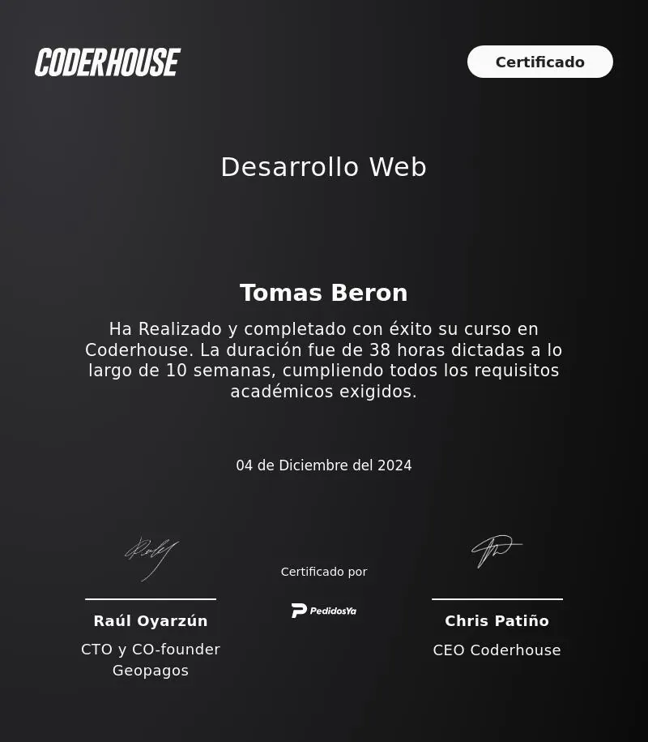

Full Stack Development
My interest in web development grew naturally out of UX/UI design: turning my ideas into code helps me work better with other developers.

Projects
From Figma designs to React front-ends and Node.js backends. Tomix Visuals, a group project to present services and team, is on the way.

Federico Villarino
A one-page portfolio for an independent audiovisual technician: his first online presence.
Kairo Creative Studio
Website for a fictional creative studio, designed in Figma and coded faithfully to the design.

DonRamón
A coffee shop e-commerce in React: catalog, persistent cart and checkout with Firebase.

E-commerce backend
REST API in Node.js, Express and MongoDB, with Handlebars views and real-time updates.

ASENWARE
Design and development of the website for this international fire alarm company's launch in Argentina.

Nimat Solutions
Full site redesign, navigation improvements and a custom ticketing system.
Federico Villarino
- Client
- Federico Villarino: sound, editing and photography
- Role
- Figma design and development
- Stack
- HTML, CSS, responsive from 320 px
Federico works independently in location sound, editing and photography, and had no online presence at all: this portfolio is his first calling card. The challenge was to make someone just starting out on his own look as solid as the work he was already delivering.
I designed and built a one-page site that organizes his material into five blocks: services, work, a personal note, client reviews and contact.
Decisions
- The work before the words. On a dark base, the audiovisual pieces stand out and draw attention on their own: visitors see the work before reading a single line about it.
- Video without weighing down the page. The short films show a still cover and play a loop on hover.
- From Figma to code, by hand. Hand-coded in HTML and CSS, responsive from 320 px, with the logo designed for the project.


Kairo Creative Studio
- Context
- Final project at Escuela Da Vinci
- Role
- Figma design and full implementation
- Stack
- HTML5, CSS3, JavaScript
Kairo is a fictional creative studio, invented for my final project at Escuela Da Vinci. The project brings two courses together: the identity and interfaces came from Graphic Design I, and the build from the development course. The pieces in Kairo's portfolio are real work of mine.
I set out to make the browser version indistinguishable from the mockup, and that fidelity was the hardest part of the project.
What I learned
- The width changed halfway through. I designed at 1920 px and the brief later set a 1300 px container: I reworked proportions, margins and breakpoints without losing the visual rhythm. A layout decision made on the canvas is never neutral.
- Coding works as a design audit. Turning the mockup into HTML surfaced typos, missing subheadings and sections that needed their own
article. - Semantic HTML, a single stylesheet with CSS variables in
:root, CSS3 animations and Lucide SVG icons.

DonRamón
- Context
- React JS final project at CoderHouse
- Role
- Interface design and implementation
- Stack
- React 19, Vite, React Router, Firebase
An online store for a coffee shop: catalog with category filters, product pages, a persistent cart and a checkout that creates the order in Firestore.
Design wasn't part of the brief, but I built my own interface because an e-commerce that can't be understood at a glance doesn't do its job, however well the code works.
Decisions
- The cart lives in a Context, not in props: the header, catalog, product page and checkout all use it.
- The cart is saved in
localStorageso users don't lose their purchase if they close the tab. - Totals are calculated from the cart instead of being stored separately, so they never go out of sync.
- Checkout validated with React Hook Form and notifications with React Hot Toast.
E-commerce backend
- Context
- Backend Programming I at CoderHouse
- Outcome
- Passed with a 10/10
- Stack
- Node.js, Express 5, MongoDB, Socket.IO
An e-commerce API that manages products and carts, with dynamic Handlebars views and real-time updates over WebSockets.
Decisions
- Pagination is handled in the database with
mongoose-paginate-v2, and the response already includes the links to the previous and next pages. - WebSockets only where they help: adding and removing products in real time uses Socket.IO; everything else goes over HTTP.
- Credentials go in environment variables with
dotenv, never in the code.
The hardest part was the jump to the backend: understanding how model, route and view connect. What I enjoyed most was designing the HTTP verbs as a self-explanatory contract.
This portfolio
One of my main projects has been this portfolio, where I combined my training with constant learning. It started in Figma with detailed wireframes, and then I built it with HTML, CSS and JavaScript so it works well on any device.
Along the way
- I used CSS Grid to structure the content efficiently.
- I worked with Sass to organize and optimize the CSS.
- I solved the challenge of adapting the design to different screen sizes and strengthened my responsive design skills.
This project didn't just improve my technical skills: it also gave me a more critical approach to problem-solving. I want to keep exploring new tools and technologies.

Technologies
The ones I use every day in this area.
- HTML
- CSS
- Sass
- JavaScript
- React
- Node.js
- Express
- MongoDB
- Firebase
- Figma
Let's make something that stands out.
Have a website, a product or a campaign in mind? Tell me what you need and let's think it through together. I work remotely, in English or Spanish.
wikipediatomitob@gmail.com